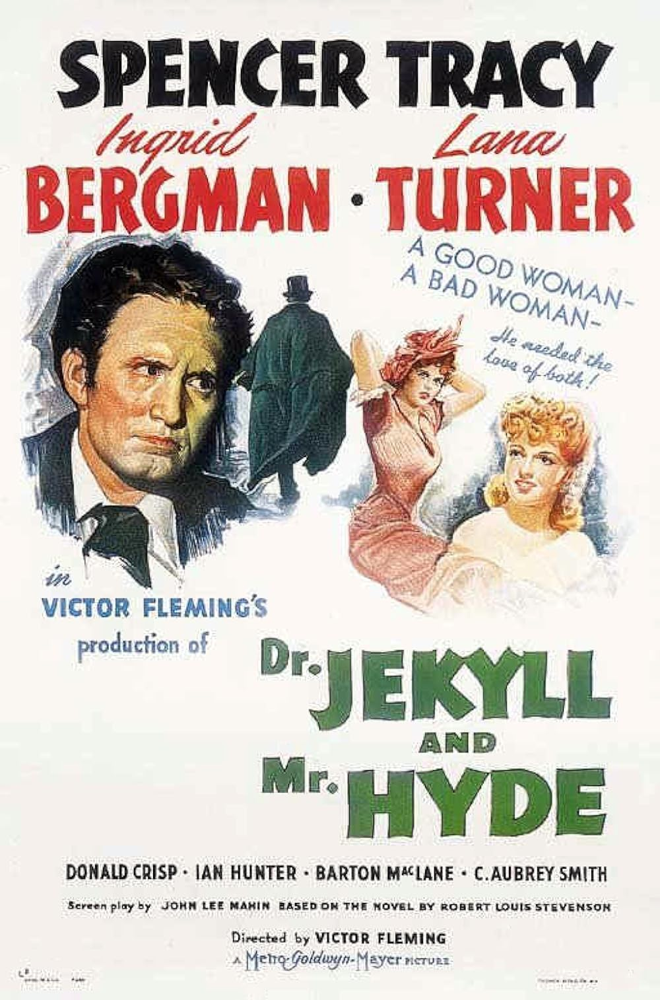

Dr. Jekyll and Mr. Hyde
14th Academy Awards
(Oscars 1942)
3 Nominations, 0 Awards
| Nominations | ||
|---|---|---|
| Category | Nominees | Result |
| Cinematography (Black-and-White) | Joseph Ruttenberg | Nominated |
| Film Editing | Harold F. Kress | Nominated |
| Music (Music Score of a Dramatic Picture) | Franz Waxman | Nominated |